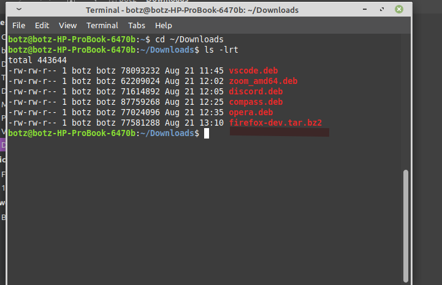

Cómo instalar Firefox developer en Ubuntu / Debian / Mint / Centos / y otras distribuciones de Linux
Tutorial para saber cómo instalar Firefox developer en Ubuntu y cómo configurarlo paso a paso.

Los sistemas operativos Linux traen Mozilla Firefox como el navegador por defecto y sabemos muy bien que este es un navegador moderno que integra numerosas funcionalidades y herramientas para el usuario final, pero existen muchos usuarios que van más allá y desean saber de antemano las novedades que estarán presentes en las siguientes ediciones de Mozilla Firefox.
Por ello estamos en la posibilidad de instalar Firefox Developer la cual, como su nombre lo indica, es la versión exclusiva para desarrolladores en la cual se ponen a prueba las nuevas funcionalidades por lo cual, y te hacemos énfasis en esto, se convierte en una edición que puede fallar en cualquier momento. Esto te lo decimos para que la uses en un ambiente de prueba o solo conocimiento sin vincular datos delicados allí.
- Integra un nuevo motor CSS, el cual está escrito en Rust, el cual maneja las últimas tendencias tecnológicas y se ha desarrollado para mejorar la velocidad de procesamiento
- Añade Firefox DevTools las cuales son un conjunto de funciones que integran JavaScript, el cual puede ser adaptado a diferentes navegadores ya que está construido con React y Redux
- Integra un nuevo panel de tipografías el cual será de gran ayuda a los desarrolladores ya que ofrecen un acceso rápido a los detalles de las tipografías que han de ser usadas en un elemento
- Firefox DevTools puede atenuar las declaraciones CSS que no poseen ningún tipo de efecto en la página web
- Posee un conjunto de herramientas para crear y diseñar con CSS Grid
- La consola de desarrollo puede detectar errores de seguridad, analizar redes CSS y JavaScript
- Moderno panel de almacenamiento donde será posible añadir, modificar o eliminar caché, cookies, bases de datos y más datos
Sin más palabras vamos a ver como instalar Firefox Developer en Ubuntu, en este caso usaremos Ubuntu 20.04.
1. Cómo instalar Firefox Developer en Ubuntu
Paso 1
Para dar inicio a este proceso iremos al sitio web oficial de Firefox Developer en el siguiente enlace:
Firefox Developer
Paso 2
Allí damos clic sobre el botón “Firefox Developer Edition” y se desplegará la siguiente ventana donde debemos guardar el archivo .tar:

Paso 3
Damos clic en OK para proceder con la descarga:
Paso 3.5
Renombramos el archivo de descarga a:
Paso 4
Ahora accedemos a la terminal de Ubuntu y vamos al directorio Descargas ejecutando:
ó
Y nos aseguramos que se encuentre el archivo firefox-dev.tar.bz2:
Paso 5
Ahora movemos el archivo comprimido a /opt ejecutando:
Paso 6
Ahora vamos al directorio /opt y validamos que se encuentre el archivo firefox-dev.tar.bz2 con los siguientes comandos:
Paso 7
Descomprimimos el archivo que hemos descargado con la orden:
Paso 8
Eliminamos el archivo .tar:
Paso 9
Ahora vamos a cambiar la propiedad de la carpeta donde esta alojado Firefox Developer Edition a /opt/firefox:

Paso 10
Abrimos el archivo .bashrc con el siguiente comando:
Paso 11
Se abrirá un archivo de texto en el editor nano como éste:

Nos vamos al final del archivo y agregamos las siguientes 2 lineas:
Guardamos cambios en el archivo bashrc con las siguientes teclas
Paso 12
Por último, vamos a ejecutar un comando que tiene como tarea crear un archivo de escritorio de Unity para acceder a Firefox Developer desde allí, para esto pegamos las siguientes líneas en la terminal:

Paso 13
Una vez realizado esto accedemos a nuestro menu y allí buscamos Firefox Developer:

Con estos simples pasos será posible instalar y usar Firefox Developer en Ubuntu.